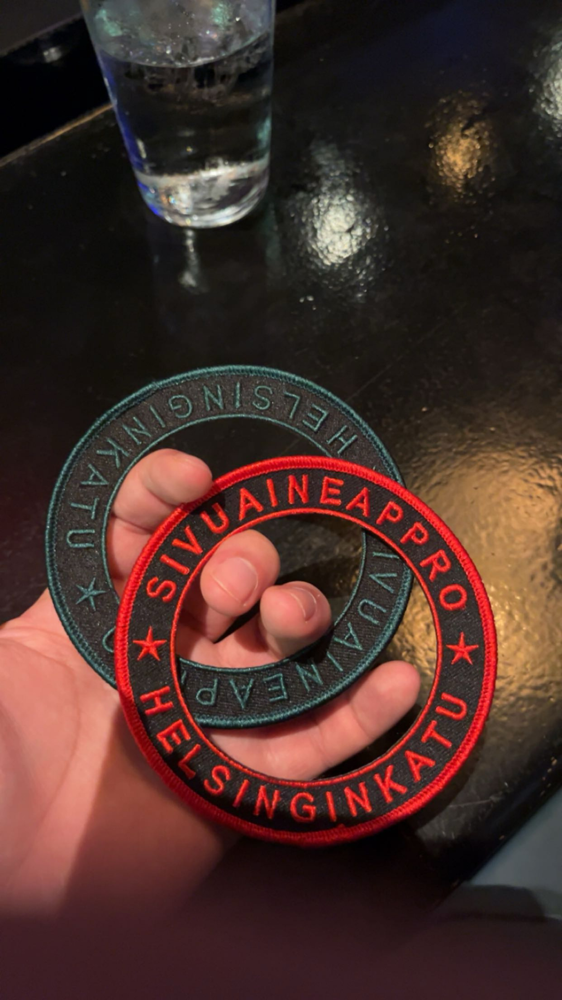

Sivuaineapprot
Aloita lukuvuosi rytinällä ja tule SivuAineApproon juhlistamaan alkavaa kouluvuotta satojen muiden opiskelijoiden ja opiskelijanmielisten kanssa! Tämä matalan kynnyksen appro on mitä parhain paikka lämmitellä itseään syksyn tapahtumia varten. 🦩
SivuAineApprot ovat Bileinsinöörit RY:n järjestämä tapahtuma. SivuAineApprot - eli tuttavallisemmin SAA - on opiskelijamielinen tapahtuma, jossa kierretään Kallion ravintoloita keräten leimoja suorituskorttiin ravintoloista ostetuista tuotteista. Poiketen monista muista approista, SAA:n suoritusmäärät eivät nouse vuosittain. Rennon meiningin mukaisesti jokaisen tason rajana on kuusi leimaa. Leikkimielisen tutkinnon haalarimerkki on suunniteltu täydentämään Helsinginkadun Approssa suoritettua merkkiä. Tein tuplasuorituksen näissä approissa eli yhteensä 12 leimaa. Tuplasuorituksenkin kanssa approt olivat rento ja nopea tapahtuma. Approilla oli viisi aluetta, joista jokaisesta piti yksi leima hakea. Lähtöpaikka toimi yhtenä alueena, joten käytännössä neljässä piti käydä.
